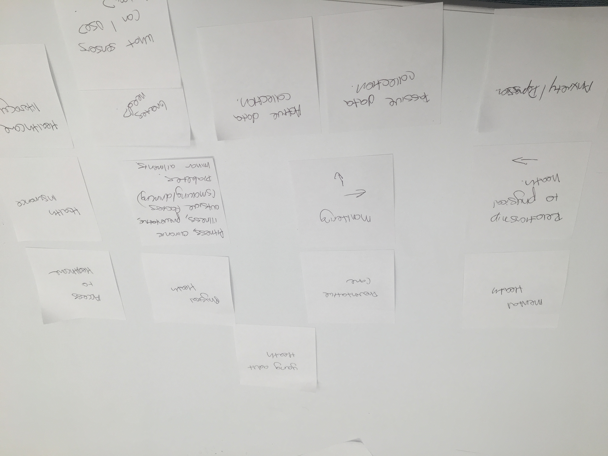
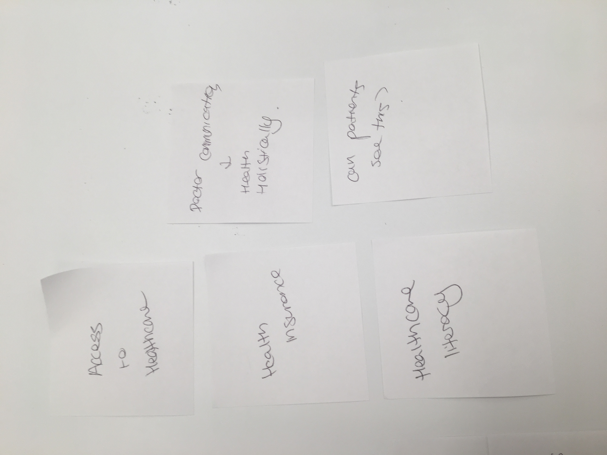

Domains
The large domain I decided to focus on was young adult health. Within that domain I listed several subdomains including mental health, preventative care, physical health, and accesses to healthcare.
Concepts
From there I established concepts under each subdomain.
Mental Health
- Relationship to physical health
- Method of managing anxiety and depression
Preventative Care
- Patient Monitoring
- Passive Data Collection
- Active Data Collection
Physical Health
- Fitness
- Chronic illness managment
- Preventative care
- Substance abuse
- Drinking/smoking
- Minor ailements management
Access to Healthcare
- Health insurance literacy
- Healthcare literacy
Precedents
I decided to begin the precedents exercise on text document instead of stickies. Due to the large number of precedents the sticky notes became a bit difficult to manage.
Mental health's relationship to physical health
- Lantern
- https://golantern.com/
- Similarities: Customizable plan based off user feedback, gives physical activity instructions to improve mental health. The aesthetic is warm and inviting while remaining clinical.
- Differences: Doesnt explore the relationship that poor mental health has on physical health.
- Manifestations of the Mind
- http://freespaceproject.org/portfolio/manifestations-of-the-mind/
- Similarities: The social aspect of the exhibition would be interesting to build on as shared experiences foster a sense of community.
- Differences: The physical limitations of the exhibit are something that I would like to handle differently. My goal is to make my project super accessible, with users being able to access it remotely.
- The Relationship between Physical Health and Psychological Well-Being among Oldest-Old Adults
- https://www.ncbi.nlm.nih.gov/pmc/articles/PMC3124935/
- Similarities: Conceptually similar in that the study compared the effects of mental well being on physical health.
- Differences: I would like my project to differ technically, in that it would be an interactive and ongoing study vs a finished report. In this sense it would also differ greatly aesthetically.
Method of managing anxiety and depression
- Headspace
- https://www.headspace.com/
- Similarities: Headspace requires a minimum amount of effort but keeps the user engaged. The aesthetic is friendly and inviting to users of varying age ranges. The concept makes sure to incorporate physical symptoms into the meditation practices.
- Differences: Headspace only includes active data collection. In order for Headspcae to be effective the user most be self aware.
- Veteran Arts Initiative
- http://www.dispatch.com/news/20170806/art-appreciation-program-helps-veterans-deal-with-anxiety-depression
- Similarities: The social aspect of the program is something that my projet could build off of. Additionally using another medium to address topics instead of approaching them straight on would be a great way to tackle problems differently.
- Differences: Art therapy is used to assiste with depression and anxiety. My project will differ technically as it will not feature in person sessions.
- Depression Toolkit
- http://www.depressiontoolkit.org/
- Similarities: The educational aspect of the site is something that I would like to build upon. The Depression Toolkit is comprehensive resource for patients.
- Differences: The aesthetics of the site do not feel particularly engaging. The technical limitations are something I would liketo build open. There are not ways to foster community or to interact with experts.
Patient monitoring through passive data
- Sense Medical
- https://goo.gl/6FFFEk
- Similarities: I would like to build a technically similar project that has the ability to capture data and display it into a dashboard. The technology is also able to function as a prediction tool, which would be very useful to my target audience.
- Differences: Sense Medical requires you to be in the same room as the stationary device, which I think would be a limiting factor for my target audience.
- Sense Medical
- http://www.physiq.com/
- Similarities: Wearable and implantable sensors collect information and create customized analytics. This would be a good thing to build off as my target audience is very invested in personalization.
- Differences: The insights from these analytics are not meant to be user facing, but instead are to be interpreted by hardware companies or healthcare providers. Creating something that was user facing as well as useful to healthcare providers would help increase communicationa and education.
- Wearable Self
- http://mfadt.parsons.edu/2017/people/jiyeon-kang/
- Similarities: The concept behing passively collected data being turned into something tangible that users are able to interact with is something I would like to build upon for my project.
- Differences: The aesthetics of the project are something I would like to do differently. Wearable Self turns data into jewerly. While this is a wonderful way to turn data into art I would like to create something that allows for the data to be interpreted and used more easily.
Patient monitoring through active data
- Why the Health Not
- http://whythehealthnot.com/health-indicators-wellness-2-0/
- Similarities: Similarly to WTHN I would like to focus on matching users to the right type of doctor depending on their symptoms.
- Differences: The concept of WTHN is to monitoring with the goal of getting users to a specific doctor who pays for the referrals. My project would differ as the concept would be to match users to the right type of doctor, not a specific provider.
- Fitbit
- https://www.fitbit.com/home
- Similarities:Fitbit maintains a simple clean aesthetic that I would like to build off of. Additionally Fitbit collects both passive and active data which generates custom recommendations to users, providing value for their time.
- Differences: Fitbit is geared toward a very specific type of physical fitness. I would like to build off of this concept by incorporating disease prevention. Additionally I would be interested to expand off of the Fitbit concept with a behavior modification component.
- Kinsa
- https://www.kinsahealth.com/
- Similarities: Kinsa collects data through a thermometer,reminds the user to take meds, and provides guidance on when to call the doctor. I would like to expand upon this concept by potentially screening for more indicators besides for temperature. The aesthetics are clean and clinical, which fall in line with the products that my age range is utilizing for their health.
- Differences: My project would differ by building upon the social component of patient doctor interaction. Rather then providing guidance on when to reach out, my thesis would explore how to facilitate that reaction.
Chronic illness managment
- Geneia
- https://www.geneia.com/
- Similarities: Remote patient monitoring to allow doctor's to preplan visits. This monitering systemw is a great concept to build off of.
- Differences: Geneia is a doctor management tool. I would like to create an aesthetic interface that allowed for patient involvment, building of Genia's concept.
- CareSync
- http://www.caresync.com/consumers/index.php
- Similarities: Conceptually similary as CareSync allows for patient data storage in a searchable way, and enables them to share with multuple doctors before visits. Additionally CareSync allows patients to establish a baseline and know when they need attention.
- Differences: The aesthetics of the interface are not user friendly and would need to be adjusted for the target audience.
- Welkin Health
- https://www.welkinhealth.com/
- Similarities: Conceptually similar as Welkin Health aims to prevent siloed data. Additionally their interface is inviting and easy to navigate.
- Differences: Welkin Health is a task management system that sync with EHRS. I would like to focus my concept more on individual patient compliency for those without healtcare teams.
Preventative care
- Counsyl
- https://www.counsyl.com/
- Similarities: The concept is similar as it focuses on preventative care through gene screening. Great aesthetic.
- Differences: While the data is actionable, Counsyl stops patient care after making recommendations for next steps after discussion of test results.
- Neurotrack
- https://neurotrack.com/
- Similarities: Concept includes early detection, tracking, and behavior plans to keep memory sharp.
- Differences: Tests cost money, which would be a prohibiting factor to my target audience.
- Omada
- https://www.omadahealth.com/
- Similarities: Questionare to determine if users are at high risk for a chronic disease. If they are, they are given tracking tools and guidelines to follow in order to decrease their chances. This concept is very similar as it focuses on behavior change.
- Differences: Doesnt partner with medical professionals.
Substance abuse
- Workit Health
- https://workithealth.com/
- Similarities: Customization of tracks, as well as 24/7 medical support and coaching. The aesthetic is appealing to young adults.
- Differences: Plans cost money which would likely discourage young adults.
- Addicaid
- http://addicaid.com/
- Similarities: Provides a social connection, tracking, inspiration. Behavior modification through encouragment and actionable data will be key to the success of my project.
- Differences: Provides a meeting schedular. Addicaid works without medical professionals which differes from my concept.
- reSET-O
- https://peartherapeutics.com/reset-o/
- Similarities: Digital therepeutics to treat opiod addictions. Concept is similar as it attempts to eliminate the need to go to the doctors office.
- Differences: Offers rewards for compliance. While this is not something that was part of my original proposal, reading the literature on the success of this program makes me think that perhaps rewards should be considered.
Minor ailements management
- CirrusMD
- https://cirrusmd.com/
- Similarities: Aesthetic geared toward young adults. Doctors are available via text message to eliminate overuse of ERs. Access to healthcare is a concept I would like to focus on.
- Differences: Cirrus does not provide continuing care, but case by case assistance.
- Minute Clinic
- http://www.cvs.com/minuteclinic/
- Similarities: Conceptually similar in that Minute Clinic's provide immediate access and relief.
- Differences: Aesthetically different in the Minute Clinics are brick and mortar structure that often include the same barriers to entry as doctor's offices.
- First Opinion
- https://firstopinionapp.com/
- Similarities: Providies immediate access to information, with a simple to use application. Similar form and structure to other programs young adults use.
- Differences: Only applicable for treament, not great for preventative medicine.
Health insurance literacy
- Zocdoc
- https://www.zocdoc.com/
- Similarities: Allows for users to search for doctors that are covered by their insurance plans. Interface is easy to use and clear.
- Differences: Doesnt explain things like what percentage will be covered, or how to go about billing for reimbursement.
- Policy Genius
- https://www.policygenius.com/health-insurance/
- Similarities: Offers users a way to price compare insurance plans, and to determine which have the amount of coverage they need. Users are able to check if their doctors and medications are covered. The step by step process also explains health insurance lingo (ie. deductible),.
- Differences: In order to build off Policy Genius I would consider creating a step by step walkthrough for how to submit insurance claims and a deductible tracker.
- League
- https://league.com/us/
- Similarities: League assists employees with maximizing their health benefits, while providing a clear picture of coverage, deductibles, and rewards. The interface is brightly colored and meant to create a holistic health plan that brings wellness into the workplace.
- Differences: League only addresses users who are able to receive health insurance through work. I would like to address young audlts who may not be able to afford health insurance or who must obtain their own coverage.
Healthcare literacy
- Mytonomy
- http://www.mytonomy.com/
- Similarities: Focuses on patient education so that they better understand their diagnosis and are able to comply.
- Differences: The concept is to better educate patients about their upcoming procedure. I would like to expand on this to include education before and after visits.
- HealthTap
- https://www.healthtap.com/
- Similarities: Provides access to doctors so that users can ask questions. Users can then make checklists to ensure that they are compliant with the doctor's recommendations. PHR are unified in an attempt to unsilo information.
- Differences:
- VideoMD
- http://www.videomd.com/
- Similarities: Collection of health information videos.
- Differences: The user experience of VideoMD is not very engaging. Additionally there is no social aspect, so it is difficult to determine if users actually understand the information being presented. Additionally content isnt cusotmized or curated, so users must have enough of an understanding to be able to find relevant informaiton.
Themes
Emergent Themes
Gaps
Tensions/Contradictions
Surprises
Questions
- What is the greatest healthcare need for my target audience?
- What sort of sensors are available for me to use?
- How are factors such as global warming, the current political climate, modern life style, and job choice affecting health?
- Would centralized PHI encourage the target audience to actually go into the doctor's office?
Revisions
After peer review I made a few additions to my chart. Another area to explore would be doctor to doctor communication, as well as the transparency of patient information.
